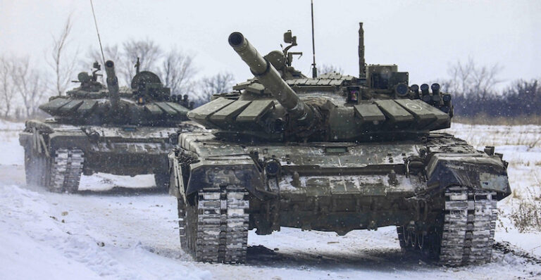

La Russia in Ucraina: o la va o la spacca
La guerra in Ucraina sarà un punto di svolta nella storia mondiale, ma prima di tutto della storia russa. Il regime di Putin è adesso davanti a un bivio, anzi le opzioni sono anche più di due: sarà un valido alleato per la Cina di Xi Jinping, diventerà una potenza di secondo ordine neutralizzata dall'Impero NATO oppure si scioglierà del tutto succube di una rivolta interna?
Al momento è difficile prevedere cosa succederà, ma è possibile analizzare quello che sappiamo. Un punto è però evidente: la Russia sta perdendo la guerra. L'inaspettata resistenza Ucraina, l'impreparazione militare russa e i dissidi interni sono i fattori maggiori di un'evidente indebolimento russo, che andrà solo a peggiorare con il prolugnamento degli scontri
Il nazionalismo ucraino uscirà vincitore dallo scontro: a seguito della completa distruzione economica di Kiev potremmo assistere ad un risveglio nazionale, supportato (probabilmente) da ingenti aiuti americani (non certo mossi da compassione, bensì da precise mire ed interessi) che potrebbero aiutare il paese a rialzarsi.
L'esercito russo, intanto, si scatena sui civili. L'apparente organizzazione logistica russa mirata ad obiettivi strategici quali aeroporti, basi militari e la foce del Dnepr, si è rivelata troppo divisa, legata alle ferrovie, troppo esposte ai sabotaggi della popolazione ucraina, e destinata soltanto all'approvigionamento di munizioni ed armamenti di alto livello tecnologico, lasciando indietro cibo e carburante.
Intanto, però, l'economia collassa. Putin si aspettava e confidava in una rapida capitolazione dell'Ucraina e non poteva immaginare che l'attore comico Zelensky rimanesse nella capitale sotto attacco; e mentre l'esercito russo (per puri motivi di dimensioni) potrebbe reggere un conflitto avanzato, la gente no, e scende in piazza nonostante le campagne di disinformazione lanciate dal governo.
Putin e i suoi pochi fidati, dalla parte del torto, non hanno fatto nulla per nasconderlo. Hanno lasciato carta bianca all'Occidente per convincere l'opinione pubblica a schierarsi con Kiev, e non sono state necessarie molte manipolazioni della realtà. In questo clima di incertezza, in cui l'unica sicurezza è la morte di molte persone, dobbiamo cercare soltanto di porre fine alla guerra.
Indipendente Trockista 6 Marzo 2022